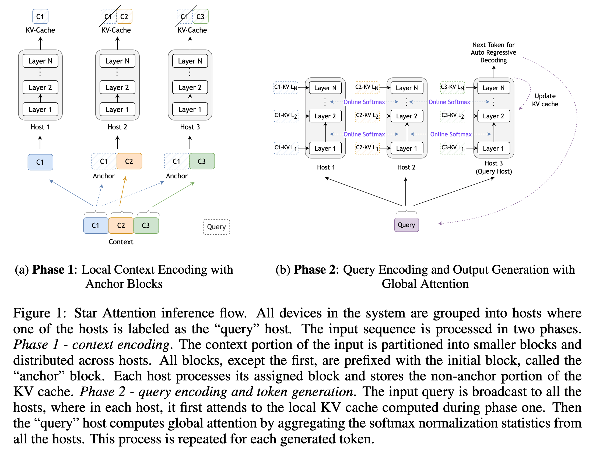
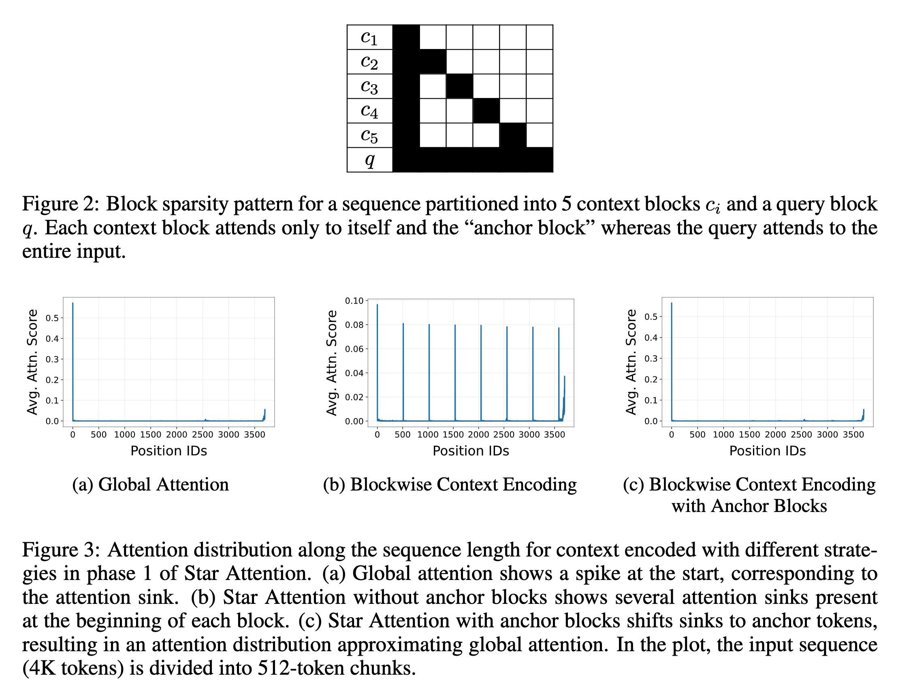
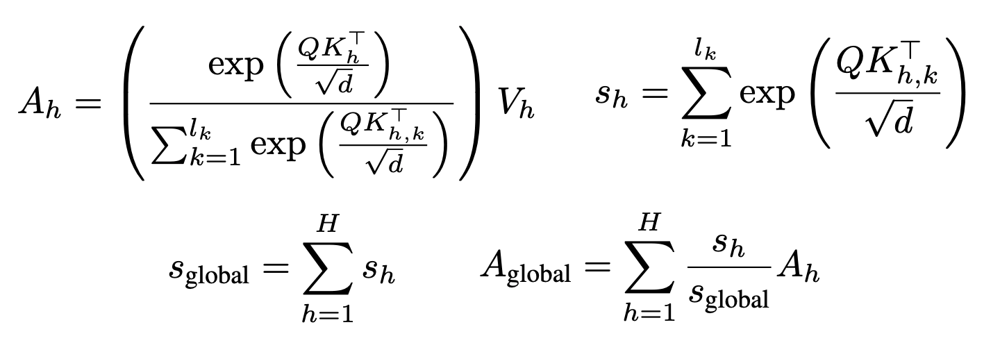
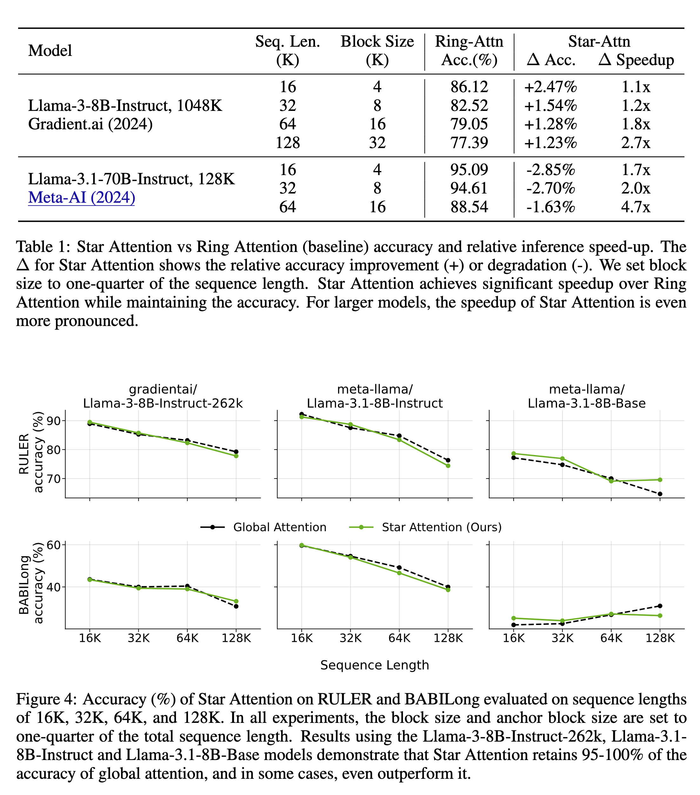

Star Attention
Efficient LLM Inference over Long Sequences
Nvidia presents Star Attention to improve LLM inference efficiency over long sequences. I was skeptical when I read the abstract the day it was published, but now that I have read the full paper, I think this is another good research

Modern LMs have huge context windows that can handle up to a million tokens. The compute & memory needs are gigantic because of the quadratic cost of the global attention mechanism. Various works have tackled speed and memory aspects differently.
For example, Flash Attention introduces an efficient GPU block-wise implementation of global attention, achieving significant reductions in memory overhead and runtime. Ring Attention further extends this idea by distributing the computation of self-attention and feed-forward modules across multiple devices, cleverly overlapping communication with shard-local attention computations to enhance scalability. Distributed strategies such as tensor, pipeline, sequence, and data parallelism have been proposed to divide compute effectively across multiple machines.
Star Attention
- Proposes novel algorithm for efficient LLM long-context inference.
- Leverages the fact that LLM inference is usually a two-stage process. The first stage is prompt encoding, where the model processes input and stores KV vectors in the cache. The second stage is the generation stage. The tokens are generated autoregressively, and the KV cache is updated.
- Based on the above, proposes star attention with a two-stage approach:
- Context Encoding and
- Query Encoding and Token Generation.
- Star Attention enables the context length to scale linearly with the number of hosts by distributing the context processing across multiple hosts.
- Compatible with most Transformer based models utilizing global attention, and it is a drop-in replacement (no fine-tuning required).
- Can be combined with additional optimizations like Flash Attention and KV compression for more gains.
Phase 1: Context Encoding
- Given an input sequence comprising a context \(c\) followed by a query q, the context \(c\) is divided into n contiguous blocks: \(c = [c_1, c_2, . . . , c_n]\), where each block ci contains \(b\) tokens.
- Every block except the first block is prefixed with the first block. The authors call this the anchor block mechanism. Without anchor blocks, the model fails to generate correct outputs. The authors hypothesize that it happens due to multiple attention sinks generated in each block when processed independently. Prefixing with the first block shifts the attention sinks to the anchor tokens.
- The augmented context looks like this: \(c' = [c_1, (c_1 c_2), (c_1 c_3), . . . , (c_1 c_n)]\). Each block in the augmented context, except for the first block, contains 2b tokens (b tokens from the first block and b tokens from the current block).
- The positional indices of c1 are preserved, ensuring that its tokens retain their original position indices \([0, 1, . . . , b−1]\)
- The augmented blocks are distributed across compute hosts, where each host computes attention over the 2b tokens from its assigned block \(c'_i\) and generates the corresponding key-value (KV) vector.
- The KV cache for the first block is discarded, but the KVs for the current block \(c_i\) are retained in the cache.

Phase 2: Query Encoding and Token Generation
- The query is broadcasted to all the hosts and transformed into a sequence \(Q\) of shape \((l_q \ X \ d)\), where \(l_q\) is the query length, and \(d\) is the head dimension in attention.
- Each host \(h\) has its local key-value pair, each of which has a shape \((l_k \ X \ d)\) where \(l_k\) is the sequence length of the KV cache. Each host computes a local attention output \(A_h\) for query \(Q\) using these KV pairs as shown below. In addition to \(A_h\), each host also stores the sum of the exponents \(s_h\) from the local softmax operation (the denominator).
- The query-host \(h_q\) gathers the local attention \(A_h\) and the sums of exponents \(s_h\) from all hosts. To compute global attention, we need the right normalization, i.e., we should compute the global softmax denominator \(s_global\) using all the \(s_h\) gathered from all the hosts.
- After computing the global attention output, the query-host h_q generates the next token. It updates its KV cache with the key and value vectors of the new token.
This process is repeated every time a new token has to be generated.

Benchmarks
So, how does star attention fare compared to other techniques like ring attention? The authors evaluate Star Attention on several Llama-based models with sequence lengths ranging from 16K to 1M tokens on RULER and BABILong benchmarks. Here are some results:
